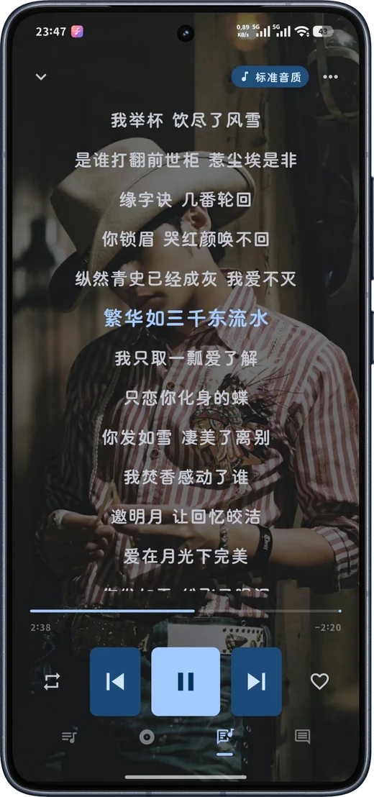
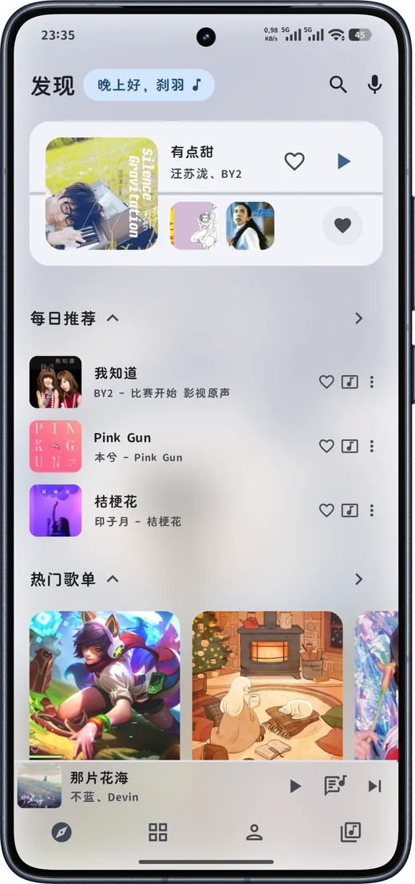
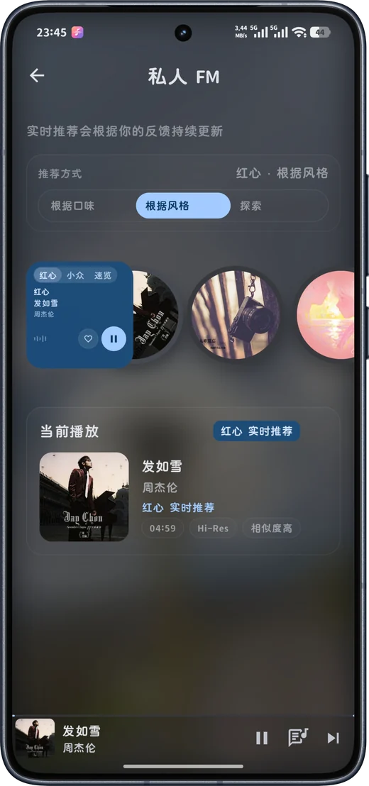
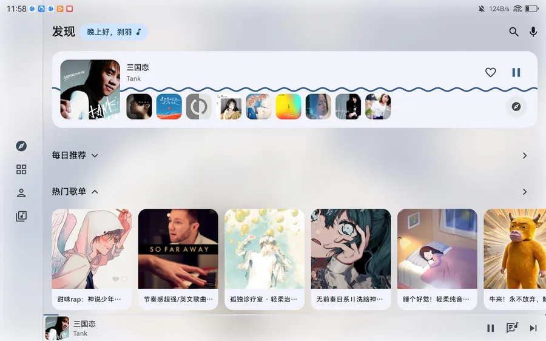
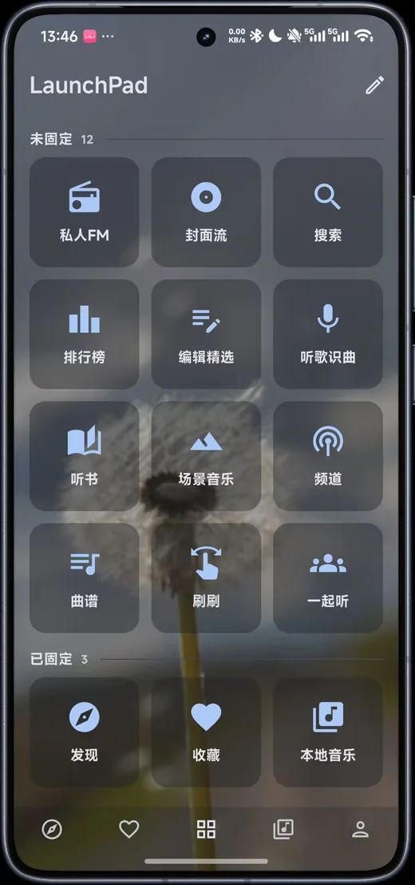
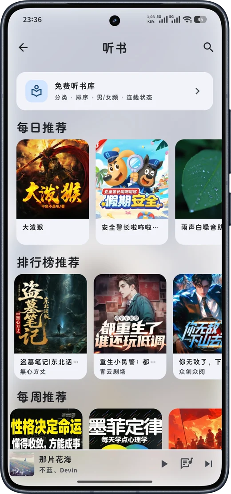
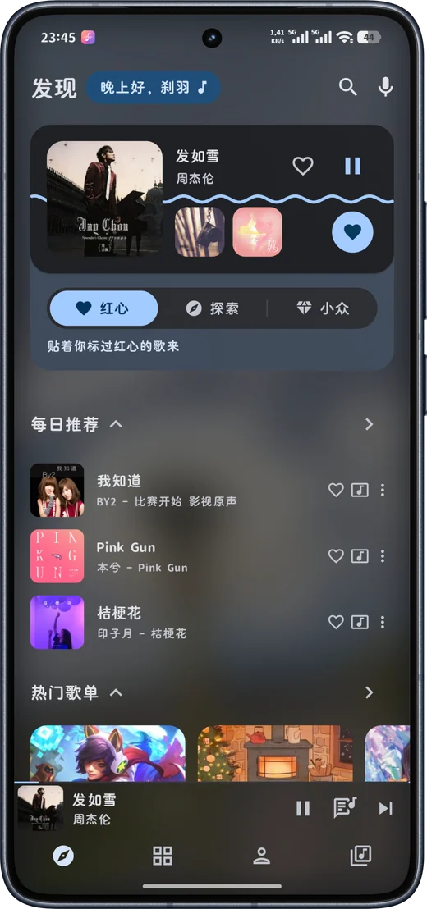

在线音乐
搜索、每日推荐、排行榜、新碟上架、私人 FM、听歌识曲，以及歌单 / 专辑 / 歌手 / 评论 / MV、云盘、听书与场景音乐。
基于 Flutter + Rust 构建，内置嵌入式 API 服务器，无需自建服务端。 支持 Android 手机 / 平板、Windows 桌面与 Android TV，提供 MD3 与 Apple Music 双风格播放页、逐字歌词、无损音质与本地音乐管理。

Fig. 02 — 逐字歌词
Fig. 01 — 发现从在线曲库到本地文件，从手机到电视与桌面，一套应用覆盖完整的音乐播放体验。
搜索、每日推荐、排行榜、新碟上架、私人 FM、听歌识曲，以及歌单 / 专辑 / 歌手 / 评论 / MV、云盘、听书与场景音乐。
文件夹浏览、内嵌封面与歌词、本地收藏、音质标签、多维度排序；Android 支持扫描 U 盘等外部存储，并为本地歌曲智能匹配在线元数据。
标准 / 高质 / 无损 / Hi-Res 多音质选择，USB 独占输出、均衡器、AutoMix 无缝过渡、响度均衡、睡眠定时、倍速与进度记忆。
Apple Music 风格 KRC / LRC 逐字歌词，支持翻译与罗马音、辉光与模糊效果、动态取色，并可推送到桌面、锁屏、蓝牙与状态栏。
Material 3 与 Apple Music 双风格播放页自由切换，动态取色、深色模式、自定义壁纸与字体、悬浮迷你播放器与主页 Tab 管理。
DLNA 投屏，本地音乐同样可投；车机自适应面板、左右停靠与底部 dock 避让，支持 CarWith 车机互联与语音点歌。
便携版免安装，支持系统托盘、SMTC 系统媒体控制、桌面歌词、圆角窗口与 Snap 布局、沉浸式播放页及版本更新检查。
遥控器焦点导航、大屏自适应限宽布局，播放 / 歌词 / 评论与播放队列均可纯遥控器操作。
内置 MCP 接口，支持搜索、播放控制与歌词查询，提供只读模式与写操作确认，可通过 HTTP / stdio 桥接外部智能体。
多账号管理、VIP 签到、听歌等级与排行、收藏与播放历史、桌面小组件，账号切换后可保留各自的播放数据。
嵌入式 Rust API 服务器随应用启动在本机运行，取代旧版 Node.js 方案，内存占用更低、启动更快，无需外部服务。
登录、搜索与播放接口均由本地服务器直连处理，不经过第三方云端中转，减少额外的隐私暴露面。
Material You 的流动色彩与 Apple Music 的静谧质感，随时切换。





Flutter 负责界面与交互，Rust 承担的 API 服务器以动态库形式嵌入应用，随进程启动于 127.0.0.1。
当前正式版 v6.4.1（2026-11-16），所有安装包均由 GitHub Actions 自动构建。
手机 / 平板 · Android 7.0 及以上
Windows 10 / 11 x64 · 便携版免安装
解压后运行 md3music.exe，内置 VC++ 运行库；Android 专属功能（USB 独占输出、桌面小组件）在 Windows 上不可用。
镜像节点为第三方公益加速服务，若无法访问请切换为 GitHub 直连。需要历史版本？前往 下载中心 或 GitHub Releases。
免费且开源，代码以 AGPL-3.0 协议发布，不包含广告或付费解锁。项目仅供学习交流，请勿用于商业用途。
Android 手机 / 平板（7.0+）、Android TV、Windows 10 / 11 x64。桌面端为便携版，无需安装。
标准版使用默认包名，适合大多数设备；随身听兼容版包名为 com.apple.android.music，用于在 Vivo 原子随身听中调用，不含 3D 封面能力。
手机端正式版仅提供 arm64-v8a。Android TV 端额外提供 32 位 armeabi-v7a 安装包，供老旧电视盒子使用。
下载 ZIP 解压到任意目录，双击 md3music.exe 即可运行，包内已自带 VC++ 运行库。如需 3D 景深封面等增强能力，可从源码自行构建全功能版本。
在下载区域切换为 ghfast.top、gh-proxy.com 或 ghproxy.net 镜像节点后再点击下载。镜像为第三方公益服务，可用性可能变化，失效时请换回 GitHub 直连。
不需要。API 服务以 Rust 动态库形式嵌入应用，随进程启动在 127.0.0.1 本地运行，安装后即可使用。
Bug / 崩溃请在 GitHub Issues 提交，并附上版本号、平台与复现步骤；使用疑问与讨论请前往 GitHub Discussions。具体信息要求与提交规范见仓库中的 CONTRIBUTING.md。